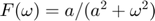
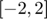
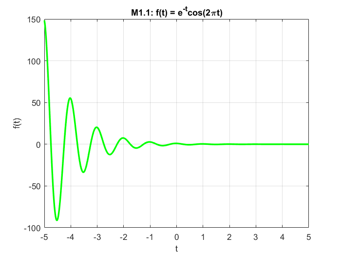

Practica 3 Señales en Tiempo Continuo
Grupo: 2TV2
Materia: Señales y Sistemas
Alumnos:
Espinosa Salas Emmanuel
Sandoval Palma Miguel Angel
Villegas Fraga Hamlet Ismael
Profesor: Dr. Rafael Martínez Martínez
Contents
Introducción
MatLab
MATLAB (Matrix Laboratory, “laboratorio de matrices”). Es un software matemático con entorno de desarrollo integrado (IDE) el cual contiene un lenguaje de programación propio (Lenguaje M) y es multiplataforma (Unix, Windows y Apple Mac Os X). MATLAB es un software de gran uso en Centros de Investigación y Desarrollo así como en universidades. En 1984 surge la primera versión, creado por Cleve Moler, con la idea de usar paquetes de subrutinas escritas en Fortran en los cursos de Análisis Numérico y Álgebra Lineal, sin tener una necesidad de programas que usaran este lenguaje.
El lenguaje de programación M se creó en 1970 proporcionando un acceso sencillo al software de matrices LINPACK y EISPACK sin tener que hacer uso del lenguaje Fortran. Ya en 2004 se apreciaba que MATLAB era usado por aproximadamente más de un millón de personas, tanto académicos como empresarios. Dentro de sus principales funciones se encuentran:
- Manipulación de Matrices.
- La representación de datos y funciones.
- Implementación de algoritmos.
- Creación de interfaces de usuario (GUI).
- Comunicación con programas en otros lenguajes y con otros dispositivos Hardware.
Aqui podra encontrar un libro para apoyarse sobre Matlab
Octave
Octave es un lenguaje de alto nivel para realizar cálculos numéricos en el ordenador, y también es un programa capaz de interpretar este lenguaje y realizar los cálculos. Octave ofrece una interfaz de usuario interactiva, orientada a línea de comandos, pero también puede ser utilizado en modo no interactivo, leyendo sus órdenes de fichero. Octave originalmente fue desarrollado para facilitar la tarea a los estudiantes de Ingeniería Química de la universidad de Texas, sin que estos tuvieran que enfrentarse a las dificultades de la programación.
Su flexibilidad en seguida lo hizo popular y su uso se expandió a otros problemas relacionados con el álgebra lineal y las ecuaciones diferenciales y favoreció su desarrollo, agregando las aportaciones de la comunidad de usuarios. Otros programas de características similares, y hasta cierto punto compatibles, son son el lenguaje R de la FSF, Matlab y Scilab. Estos dos últimos propietarios. Octave es software libre (bajo licencia GNU), lo que significa que se puede usar y redistribuir libremente, y que cualquiera puede ayudar para mejorarlo. Octave está disponible en Internet en http://www.octave.org.
Python
Python es un lenguaje de programación el cual fue creado por el holandés Guido van Rossum en los años 90. Su nombre esta inspirado en el grupo humorista británico Monty Python. Este lenguaje es caracterizado por su simplicidad y rápido aprendizaje. Si queremos hacer el clásico hola mundo en este lenguaje, nos basta con escribir print “hola mundo”. Las características principales de este lenguaje son cuatro:
- Tipado dinámico, no es necesario indicar el tipo de variable al momento de declararlo ya que lo identifica automaticamente.
- Fuertemente tipado, no se permite tratar de manera implicita a una variable como si fuera de otro tipo.
- Multiplataforma, se refiere a que no depende de un sistema operativo en especifico para funcionar bien.
- Multiparadigma, python es un lenguaje orientado a diversos paradigmas entre ellos tiene la programacion orientada a objetos, programación estructurada, programación funcional y programación orientada a aspectos.
enlace de descarga o visualizacion sobre un libro para aprender python
Ejercicio 1
Crea una función que se llame fun1 y reciba dos parametros y la función debe regresar la evaluación , esta función debe trabajar con y . Debe mostrar su código en el reporte (sin ejecutar).
function [f] = fun1(w,a)
if imag(a)~=0
disp('error')else
f=a./(a.^2+w.^2)
end
end
Ejercicio 2
Construya una función que gráfique funciones de en el formato de su elección y pruebe su código mostrando la gráfica de vs en el intervalo  para , no debe incluir el código, solo el uso de la función para mostrar la gráfica
Ejercicio 3
Construya una función que gráfique funciones de en el formato de su elección y pruebe su código mostrando la gráfica de la transformada de Fourier en de la función , puede utilizar una función anonima para este fin, no debe incluir el código, solo el uso de la función para mostrarla gráfica. Reporte la gráfica de de (recuerde que ya tiene una función para esto). Reporte del espectro de magnitud y del espectro de fase en (puedes con sultar con help la descripción de abs, angle, atan2). Solo reporte las graficas.
Ejercicio 4
Realiza las mismas operaciones que Lathi en las secciones M1.1 a M1.4 que se encuentra al final del capítulo 1 y antes de la sección de problemas, cambie los inline por funciones anonimas
close all; clear all; clc; % M1.1 t = -5:0.01:5; % Anonymous Function f = @(t) exp(-t).*cos(2*pi*t); % Gráfica de la función anónima figure(1) plot(t, f(t),'g', 'LineWidth', 2); title('M1.1: f(t) = e^{-t}cos(2\pit)'); xlabel('t'); ylabel('f(t)'); grid on; % M1.2 % Anonymous Function u(t) u = @(t) t >= 0; % Gráfica de u(t) figure(2); hold on; plot(t, u(t),'r', 'LineWidth', 2); title('M1.2: Escalon u(t)'); xlabel('t'); ylabel('u(t)'); grid on; % Anonymous Function p = @(t) u(t) - u(t-1); % Gráfica de p(t) figure(3); hold on; plot(t, p(t),'c', 'LineWidth', 2); title('M1.2: p(t) = u(t) - u(t-1)'); xlabel('t'); ylabel('p(t)'); grid on; %M1.3 % Anonymous Function f = @(t) exp(-t).*cos(2*pi*t); % Anonymous Function g = @(t) f(t).*u(t); % Gráfica g(t) figure(4); hold on; plot(t, g(t),'k', 'LineWidth', 2); title('M1.3: g(t)'); xlabel('t'); ylabel('g(t)'); grid on; % Gráfica g(2t+1) figure(5); hold on; plot(t, g(2*t+1),'y', 'LineWidth', 2); title('M1.3: g(2t+1)'); xlabel('t'); ylabel('g(2t+1)'); grid on; % Gráfica g(-t+1) figure(6); hold on; plot(t, g(-1*t+1),'m', 'LineWidth', 2); title('M1.3: g(-t+1)'); xlabel('t'); ylabel('g(-t+1)'); grid on; % Anonymous Function h = @(t) g(2*t+1) + g(-1*t+1); % Gráfica g(-t+1) figure(7); hold on; plot(t, h(t), 'LineWidth', 2); title('M1.3: h(t) = g(2t+1) + g(-t+1)'); xlabel('t'); ylabel('h(t)'); grid on;

%M1.4 % Definiciones u = @(t) t >= 0; x = @(t) exp(-t).*(u(t)-u(t-1)); x2 = @(t) exp(-2*t).*(u(t)-u(t-1)); % Energía de x(t) % El resultado tendrá un 0.1% de error relativo t = 0:0.001:1; % Integración numérica mediante aproximación rectangular (sum) E_x = sum(x(t).*x(t)*0.001); display(E_x); % Integración numérica mendiante cuadratura de Simpson (quad) % Se debe elevar al cuadrado la señal e indicar los límites de integración S_x = integral(x2,0,1); display(S_x); % Energía de g(t) t = 0:0.001:100; % Definiciones f = @(t) exp(-t).*cos(2*pi*t); f2 = @(t) exp(-2*t).*(cos(2*pi*t)).^2; g = @(t) f(t).*u(t); g2 = @(t) f2(t).*u(t); % Integración numérica mediante aproximación rectangular (sum) E_g = sum(g(t).*g(t)*0.001); display(E_g); % Integración numérica mendiante cuadratura de Simpson (quad) S_g = integral(g2,0,100); display(S_g); % Energía de h(t) t = -2:0.001:2; % Definiciones h = @(t) g(2*t+1) + g(-1*t+1); h2 = @(t) g2(2*t+1) + g2(-1*t+1); % Integración numérica mediante aproximación rectangular (sum) E_h = sum(h(t).*h(t)*0.001); display(E_h); % Integración numérica mendiante cuadratura de Simpson (quad) S_h = integral(h2,-1,1); display(S_h);
E_x =
0.4328
S_x =
0.4323
E_g =
0.2567
S_g =
0.2562
E_h =
0.3769
S_h =
0.3793
Ejercicio 5
Resuelve el problema 1.2.2 usando las herramientas del paso anterior.
t = -8:0.01:10; % Definiciones u = @(t) t >= 0; x = @(t) -t.*(u(t+4)-u(t))+t.*(u(t)-u(t-2)); % Gráfica de la señal x(t) figure(8); hold on; plot(t, x(t),'m', 'LineWidth', 2); title('x(t) = -t(u(t+4)-u(t))+t(u(t)-u(t-2))'); xlabel('t'); ylabel('x(t)'); grid on; % a) x(t-4) figure(9); hold on; plot(t, x(t-4),'k', 'LineWidth', 2); title('x(t-4)'); xlabel('t'); ylabel('x(t-4)'); grid on; % b) x(t/1.5) figure(10); hold on; plot(t, x(t./(1.5)),'y', 'LineWidth', 2); title('x(t/1.5)'); xlabel('t'); ylabel('x(t/1.5)'); grid on; % c) x(-t) figure(11); hold on; plot(t, x(-t),'g', 'LineWidth', 2); title('x(-t)'); xlabel('t'); ylabel('x(-t)'); grid on; % d) x(2t-4) figure(12); hold on; plot(t, x(2*t-4),'b', 'LineWidth', 2); title('x(2t-4)'); xlabel('t'); ylabel('x(2t-4)'); grid on; % e) x(2-t) figure(13); hold on; plot(t, x(2-t),'r', 'LineWidth', 2); title('x(2-t)'); xlabel('t'); ylabel('x(2-t)'); grid on;

Ejercicio 6
Escriba una función que se llame energia que reciba como argumento una función (anónima o simbólica) y que regrese el calculo de la energía, para esto puede resultar útil investigar las instrucciones int , integral Se presupone utilizar el código solo con funciones de energia. Muestre el código sin ejecutar, y posteriormente resuelva el problema 1.1.3
function [resultado]= energia(funevaluar) %la funcion energia recibe un argumento que es la funcion en terminos de t
limiteinferior=input('ingresa el limite de la integral ') limitesuperior=input('ingresa el limite superior de la integral ')resultado=int(abs(funevaluar).^2,limiteinferior,limitesuperior);
end
a. Find the energies of the pair of signals x(t) and y(t) depicted in Fig. P1.1-3a and P1.1-3b. Sketch and find the energies of signals x(t) + y(t) and x(t) ? y(t).

(a)
(b)
b. Repeat part (a) for the signal pair illustrated in Fig. P1.1-3c. Is your observation in part (a) still valid?
Ejercicio 7
Escriba una función que se llame potencia que reciba como argumento una función (anónima o simbólica) y que regrese el cálculo de la potencia para esto puede resultar útil investigar las instrucciones int , integral Se presupone utilizar el código solo con funciones de potencia. Muestre el código sin ejecutar, y posteriormente resuelva el problema 1.1.4
function [resultado]=potencia(funb) %función que recibe una expresión en términos de t limiteinferior=input('ingresa el limite inferior de la funcion ') %límite inferior -T0/2 limitesuperior=input('ingresa el limite superior de la funcion ') %límite superior T0/2 t0=abs(limiteinferior)+abs(limitesuperior) %calculamos el t0 a partir de los límites, tomamos su valor absoluto para realizar la suma resultado=(1/t0)*int(abs(funb).^2,(-t0/2),(t0/2)); %cálculo de la integral usando la fórmula de la potencia sin el límite end


Se sabe que el valor rms es la raíz cuadrada de la potencia
a)
b)
c)